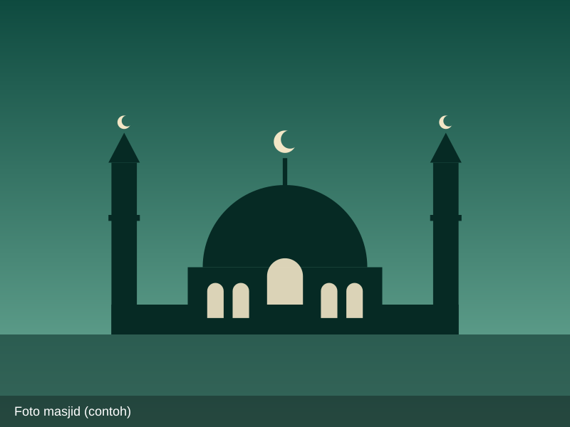

Profil Masjid Syukur Ampel
Mengenal sejarah, ciri khas arsitektur biru, inspirasi pelayanan Jogokariyan, serta visi misi masjid ramah musafir.
Oase Ramah Musafir di Jalur Nasional
Masjid Jami' Syukur merupakan salah satu tempat ibadah paling populer dan ikonik di jalur utama Solo–Semarang. Berdiri di Dusun 2, Kaligentong, Kecamatan Ampel, Kabupaten Boyolali, masjid ini berada persis di tepi jalan arteri nasional yang menghubungkan Solo menuju Salatiga dan Semarang.
Masjid ini merupakan masjid binaan Pimpinan Daerah Muhammadiyah (PDM) Boyolali dan berada dalam satu kompleks terpadu dengan kantor PCM (Pimpinan Cabang Muhammadiyah) Ampel dan Gladagsari. Bangunannya didominasi oleh sapuan cat warna biru mencolok yang menjadi penanda visual (landmark) yang sangat kuat dan mudah dikenali dari kejauhan bagi para pengguna jalan.
Inspirasi Masjid Jogokariyan: Dalam hal tata kelola dan pelayanan jamaah, takmir Masjid Syukur terinspirasi langsung dari kemakmuran Masjid Jogokariyan Yogyakarta. Takmir berkomitmen bahwa masjid bukan tempat menyimpan saldo kas, melainkan sarana melayani umat dengan menyediakan beragam fasilitas cuma-cuma 24 jam penuh untuk mengundang masyarakat, musafir, dan generasi muda memakmurkan masjid.

Prinsip Pelayanan 24 Jam Non-Stop
Filosofi pelayanan takmir Masjid Syukur dalam memuliakan setiap tamu Allah yang melintas di Boyolali.
1. Keterbukaan Penuh
Pintu masjid, serambi, dan fasilitas sanitasi tidak pernah dikunci. Siapapun berhak masuk untuk shalat, berdzikir, maupun sekadar beristirahat melepas lelah.
2. Memuliakan Musafir
Musafir dianggap sebagai tamu istimewa yang dijamu dengan minuman hangat gratis, tempat tidur layak, dan lingkungan yang aman demi keselamatan perjalanannya.
3. Dakwah Ramah Generasi Muda
Menghapus kesan kaku di masjid dengan menyediakan fasilitas Wi-Fi gratis kencang dan ruang interaksi positif agar anak muda mencintai masjid.
Visi Masjid
Menjadikan Masjid Syukur sebagai pusat ibadah yang makmur, mandiri, dan pelopor masjid ramah musafir yang menebarkan keberkahan serta dakwah Islam berkemajuan bagi seluruh umat.
Misi Utama
- Menyelenggarakan ibadah shalat berjamaah 5 waktu yang tertib, nyaman, dan khusyuk.
- Menyediakan layanan rest area non-tol 24 jam dengan fasilitas kasur istirahat, minuman gratis, dan Wi-Fi bagi musafir.
- Menghidupkan majelis ilmu melalui Kajian Rutin Ahad Pagi dan pembinaan keislaman yang mencerahkan.
- Menyelenggarakan program I'tikaf Ramadhan 10 malam terakhir berfasilitas lengkap cuma-cuma.
- Mengoptimalkan pendayagunaan zakat, infak, sedekah untuk santunan yatim dan dhuafa di wilayah Ampel Boyolali.
- Menjaga kebersihan toilet, sarana wudhu, dan lingkungan masjid secara profesional setiap saat.
Struktur Takmir & Pengelola
Jajaran pengurus takmir Masjid Syukur di bawah binaan PDM Boyolali & PCM Ampel.
Penasihat & Pembina
Pengurus Harian Takmir
Biro Pelayanan & Kemakmuran
Data Teknis & Informasi Masjid
- Nama ResmiMasjid Jami' Syukur Ampel Boyolali
- Alamat LengkapJl. Raya Boyolali - Semarang No.141, Dusun 2, Kaligentong, Kec. Ampel, Kabupaten Boyolali, Jawa Tengah 57352
- Akses Jalur ArteriTepat di pinggir jalan raya nasional arteri Solo–Semarang (sisi kiri arah ke barat/Semarang)
- Afiliasi KelembagaanBinaan Pimpinan Daerah Muhammadiyah (PDM) Boyolali / PCM Ampel & Gladagsari
- Konsep PelayananMasjid Ramah Musafir 24 Jam Non-Stop (Inspirasi Jogokariyan)
- Ciri Khas FisikCat bangunan warna biru mencolok yang ikonik
- Kapasitas Bangunan±1.000 Jamaah
- Fasilitas UnggulanKopi & teh gratis 24 jam, Wi-Fi gratis, kasur tidur musafir, toilet & wudhu bersih wangi, parkir luas
- Media Sosial ResmiInstagram: @masjidsyukur.ampel